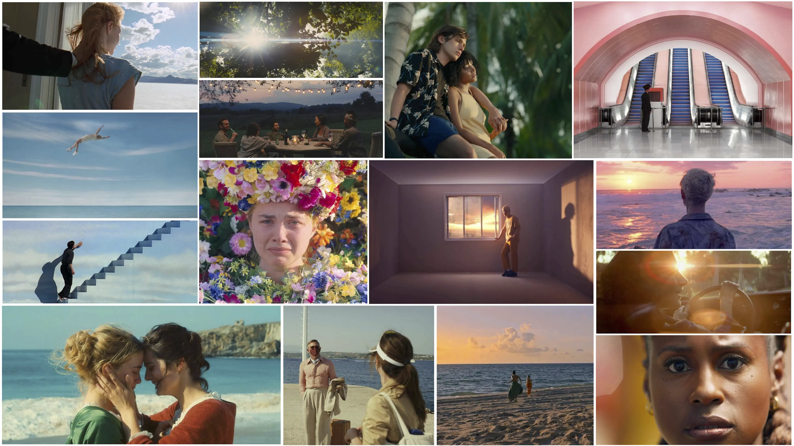
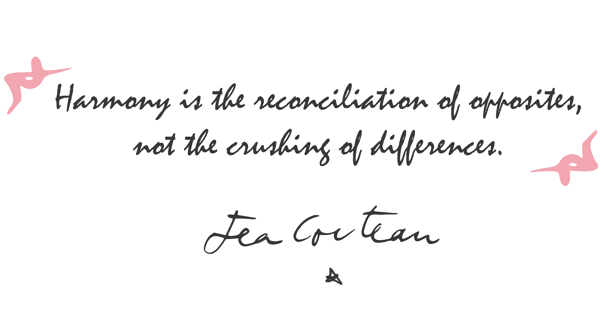
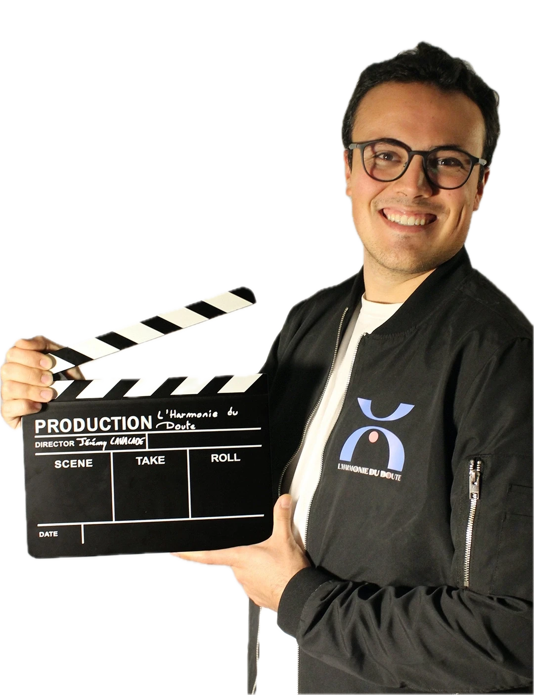

Harmony & Doubt
Seeking peace without giving up the boldness to question what surrounds us.
Jérémy Lavalade & Pablo Freïtas present
What if the key to harmony was lying in the depth of doubts...
DiveThe film
The tragic rise in sea level has isolated the last remaining landmass on the planet: the Island of La Pointe Rose. For decades, a population has lived there peacefully, free and without negative thoughts.
One morning, Tana, a well-respected journalist, finds a newspaper in the street. This seemingly innocuous event, however, sends her into a disturbing tailspin.
With a dull anxiety, she intuitively feels that the harmony reigning on the island might be just an illusion. She must understand. She is not sure. She even doubts whether she truly wants to know…
The teaser

Screened on June 19, 2026 at the Cinéma Le Central, Puteaux

Beneath the surface, doubt.

The objectives
Through a quest for balance between harmony and doubt, critical thinking and passivity, humans and the environment, we want to convey the pleasure of boldness and self-questioning, the joy of actively participating, at one's own level, in the sustainable evolution of society…
Seeking peace without giving up the boldness to question what surrounds us.
Questioning what seems obvious rather than falling asleep in the comfort of illusion.
Taking part, each at their own level, in the sustainable evolution of society.

The team
Around him, artistic, production and technical teams embarked on the same adventure: bringing La Pointe Rose to the screen.
They support us